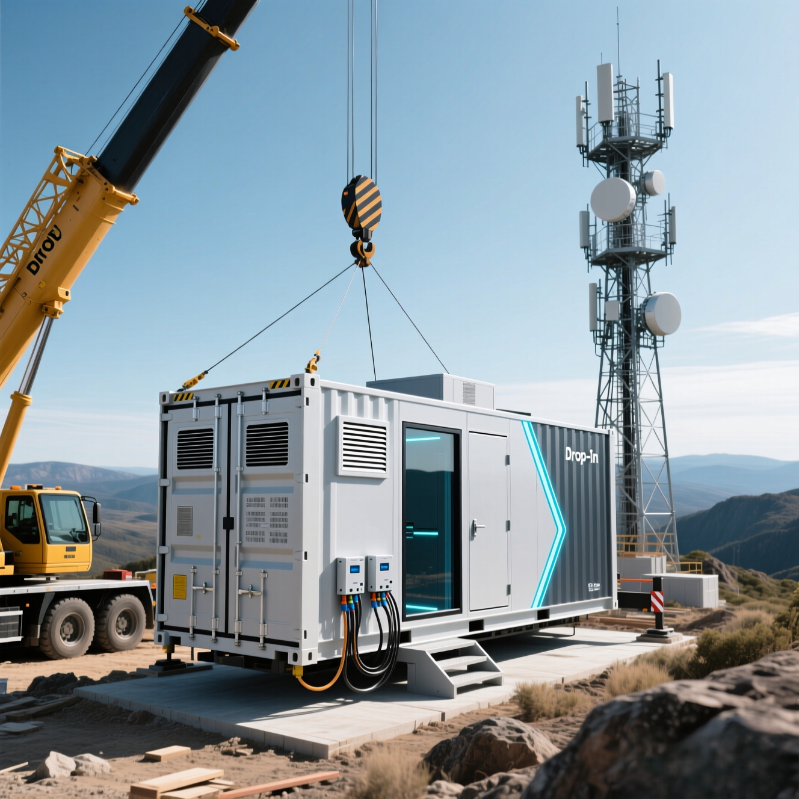

Compute Where You Need It, Without the Construction Project

Not every deployment happens in a well-serviced industrial park with easy contractor access, established utility infrastructure, and a facilities team on call. Edge compute, by definition, means putting infrastructure where the workload is — and workloads don't always have the courtesy to be located somewhere convenient.
Remote sites, urban edge locations, constrained campuses, and temporary deployments all share a common challenge: the moment you introduce significant construction work, costs and complexity spiral in ways that undermine the business case entirely. A contractor mobilization that would be a rounding error on a large campus build becomes a major line item when the site is three hours from the nearest city. Permitting that would be routine in an industrial zone becomes a months-long process in a dense urban neighborhood. Work that needs to be minimized, both in scope and in disruption, suddenly has to happen anyway because the infrastructure isn't self-contained.
Our modules were designed to eliminate that dependency.
Self-Contained by Design
The core principle behind our drop-in deployment model is that everything the module needs to operate should ship with the module. Power distribution, cooling systems, network infrastructure, and compute are all integrated and factory-commissioned before the unit ever leaves our facility. When it arrives at your site, it isn't a collection of components waiting to be assembled and configured — it's a complete, tested system waiting to be connected.
That distinction changes what site work actually looks like. Instead of coordinating multiple trades across an extended installation schedule, deployment becomes a defined, predictable sequence: site the module, make utility connections, and commission. The scope is narrow enough that it can be executed with a small, skilled team rather than a full construction mobilization. In many cases, the work that remains on site is exactly that — basic connections and verification, not construction.
Remote Sites, Solved
Edge deployments at remote locations carry a cost multiplier that punishes complexity. Travel time, accommodation, equipment mobilization, and the general friction of working far from established infrastructure all compound quickly. A deployment that requires multiple site visits across an extended installation period isn't just expensive — it introduces schedule risk in environments where your ability to manage that risk is limited.
A module that drops in and connects on a single visit changes the economics entirely. The complexity budget gets spent once, in the factory, rather than being distributed across every site in your deployment footprint. Whether you're putting compute at an energy facility, a remote research station, a cell tower aggregation point, or any other location where infrastructure support is thin, the calculation is the same: the less work that has to happen on site, the more viable the deployment becomes.
Urban Edge Without the Urban Headache
Remote sites have distance working against them. Urban edge sites have density. Deploying infrastructure in an urban environment means navigating permitting, managing noise and disruption, working within constrained physical footprints, and minimizing the visible impact of construction on the surrounding area. A deployment that looks like a building project draws scrutiny that a deployment that looks like a delivery simply doesn't.
Our modules are designed to fit within standard transport envelopes, which means they move through urban environments on conventional vehicles and can be placed with standard equipment. Installation doesn't require extended site occupation or the kind of sustained contractor presence that attracts attention and generates complaints. The footprint of the deployment process is as small as the footprint of the deployed unit.
Confidence Before the Truck Leaves
The other dimension of frictionless deployment is certainty. When you're deploying to a site where follow-up work is expensive and remediation is difficult, you need to know the module will work when it arrives. Factory commissioning means the system has been fully tested under controlled conditions before it ships. The reference spec design means there are no field engineering decisions left to make. What worked in the factory will work on site, because the site work isn't where the system is being built — it's where a finished system is being connected.
That certainty has real value. It means your deployment schedule is predictable. It means your team on site is executing a defined process rather than solving problems. And it means the compute you're deploying is generating value on the timeline you planned for, not the timeline that field conditions allowed.
The Bottom Line
Edge compute has always promised to bring processing power closer to where it's needed. The practical barrier has consistently been the cost and complexity of deploying infrastructure outside of established, well-served locations. A module that ships complete, installs with minimal site work, and commissions reliably removes that barrier. Whether your edge is remote, urban, or simply inconvenient, the deployment looks the same: drop it in, connect it, and run.